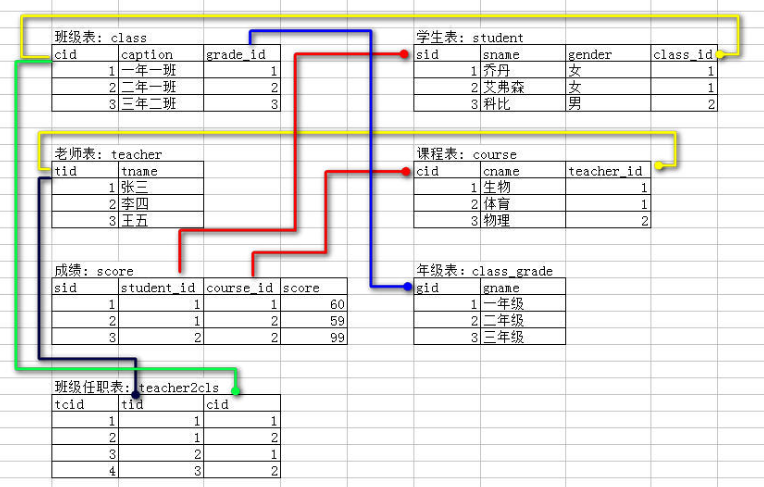

MySQL 练习

1. 环境准备¶
/*
Navicat MySQL Data Transfer
Source Server : localhost
Source Server Version : 50621
Source Host : localhost:3306
Source Database : taotaolinux
Target Server Type : MYSQL
Target Server Version : 50621
File Encoding : 65001
Date: 2018-03-17 21:20:45
*/
SET FOREIGN_KEY_CHECKS=0;
-- ----------------------------
-- Table structure for `class`
-- ----------------------------
DROP TABLE IF EXISTS `class`;
CREATE TABLE `class` (
`cid` int(11) NOT NULL AUTO_INCREMENT,
`caption` char(10) NOT NULL,
`grade_id` int(11) NOT NULL,
PRIMARY KEY (`cid`),
KEY `grade_id` (`grade_id`),
CONSTRAINT `class_ibfk_1` FOREIGN KEY (`grade_id`) REFERENCES `class_grade` (`gid`)
) ENGINE=InnoDB AUTO_INCREMENT=12 DEFAULT CHARSET=utf8;
-- ----------------------------
-- Records of class
-- ----------------------------
INSERT INTO `class` VALUES ('1', '一年一班', '1');
INSERT INTO `class` VALUES ('2', '一年二班', '1');
INSERT INTO `class` VALUES ('3', '一年三班', '1');
INSERT INTO `class` VALUES ('4', '一年四班', '1');
INSERT INTO `class` VALUES ('5', '一年五班', '1');
INSERT INTO `class` VALUES ('6', '二年一班', '2');
INSERT INTO `class` VALUES ('7', '二年二班', '2');
INSERT INTO `class` VALUES ('8', '二年三班', '2');
INSERT INTO `class` VALUES ('9', '二年四班', '2');
INSERT INTO `class` VALUES ('10', '三年一班', '3');
INSERT INTO `class` VALUES ('11', '三年二班', '3');
-- ----------------------------
-- Table structure for `class_grade`
-- ----------------------------
DROP TABLE IF EXISTS `class_grade`;
CREATE TABLE `class_grade` (
`gid` int(11) NOT NULL AUTO_INCREMENT,
`gname` char(10) NOT NULL,
PRIMARY KEY (`gid`)
) ENGINE=InnoDB AUTO_INCREMENT=4 DEFAULT CHARSET=utf8;
-- ----------------------------
-- Records of class_grade
-- ----------------------------
INSERT INTO `class_grade` VALUES ('1', '一年级');
INSERT INTO `class_grade` VALUES ('2', '二年级');
INSERT INTO `class_grade` VALUES ('3', '三年级');
-- ----------------------------
-- Table structure for `course`
-- ----------------------------
DROP TABLE IF EXISTS `course`;
CREATE TABLE `course` (
`cid` int(11) NOT NULL AUTO_INCREMENT,
`cname` char(10) NOT NULL,
`teacher_id` int(11) NOT NULL,
PRIMARY KEY (`cid`),
KEY `teacher_id` (`teacher_id`),
CONSTRAINT `course_ibfk_1` FOREIGN KEY (`teacher_id`) REFERENCES `teacher` (`tid`)
) ENGINE=InnoDB AUTO_INCREMENT=6 DEFAULT CHARSET=utf8;
-- ----------------------------
-- Records of course
-- ----------------------------
INSERT INTO `course` VALUES ('1', '生物', '1');
INSERT INTO `course` VALUES ('2', '体育', '1');
INSERT INTO `course` VALUES ('3', '物理', '2');
INSERT INTO `course` VALUES ('4', '数学', '1');
INSERT INTO `course` VALUES ('5', '美术', '3');
-- ----------------------------
-- Table structure for `score`
-- ----------------------------
DROP TABLE IF EXISTS `score`;
CREATE TABLE `score` (
`sid` int(11) NOT NULL AUTO_INCREMENT,
`student_id` int(11) NOT NULL,
`course_id` int(11) NOT NULL,
`score` int(10) unsigned NOT NULL,
PRIMARY KEY (`sid`),
UNIQUE KEY `sid` (`sid`),
KEY `student_id` (`student_id`),
KEY `course_id` (`course_id`),
CONSTRAINT `score_ibfk_1` FOREIGN KEY (`student_id`) REFERENCES `student` (`sid`),
CONSTRAINT `score_ibfk_2` FOREIGN KEY (`course_id`) REFERENCES `course` (`cid`)
) ENGINE=InnoDB AUTO_INCREMENT=11 DEFAULT CHARSET=utf8;
-- ----------------------------
-- Records of score
-- ----------------------------
INSERT INTO `score` VALUES ('5', '1', '3', '80');
INSERT INTO `score` VALUES ('8', '4', '3', '70');
INSERT INTO `score` VALUES ('9', '5', '3', '50');
-- ----------------------------
-- Table structure for `student`
-- ----------------------------
DROP TABLE IF EXISTS `student`;
CREATE TABLE `student` (
`sid` int(11) NOT NULL AUTO_INCREMENT,
`sname` char(10) NOT NULL,
`gender` enum('男','女') DEFAULT NULL,
`class_id` int(11) NOT NULL,
PRIMARY KEY (`sid`),
KEY `class_id` (`class_id`),
CONSTRAINT `student_ibfk_1` FOREIGN KEY (`class_id`) REFERENCES `class` (`cid`)
) ENGINE=InnoDB AUTO_INCREMENT=18 DEFAULT CHARSET=utf8;
-- ----------------------------
-- Records of student
-- ----------------------------
INSERT INTO `student` VALUES ('1', '乔丹', '女', '1');
INSERT INTO `student` VALUES ('2', '艾森', '女', '2');
INSERT INTO `student` VALUES ('3', '科比', '男', '3');
INSERT INTO `student` VALUES ('4', '黄家', '女', '1');
INSERT INTO `student` VALUES ('5', '胡启', '男', '1');
INSERT INTO `student` VALUES ('6', '吴宇', '男', '2');
INSERT INTO `student` VALUES ('7', '唐明', '女', '3');
INSERT INTO `student` VALUES ('8', '叶葱', '男', '2');
INSERT INTO `student` VALUES ('9', '张淳', '女', '2');
INSERT INTO `student` VALUES ('10', '映月', '男', '1');
INSERT INTO `student` VALUES ('11', '胡启', '男', '1');
INSERT INTO `student` VALUES ('12', '天宇', '女', '2');
INSERT INTO `student` VALUES ('13', '孙兰', '男', '3');
INSERT INTO `student` VALUES ('14', '张笑', '男', '3');
INSERT INTO `student` VALUES ('15', '张兰', '女', '1');
INSERT INTO `student` VALUES ('16', '张兰', '女', '2');
INSERT INTO `student` VALUES ('17', '张兰', '女', '3');
-- ----------------------------
-- Table structure for `teacher`
-- ----------------------------
DROP TABLE IF EXISTS `teacher`;
CREATE TABLE `teacher` (
`tid` int(11) NOT NULL AUTO_INCREMENT,
`tname` char(10) NOT NULL,
PRIMARY KEY (`tid`)
) ENGINE=InnoDB AUTO_INCREMENT=5 DEFAULT CHARSET=utf8;
-- ----------------------------
-- Records of teacher
-- ----------------------------
INSERT INTO `teacher` VALUES ('1', '张三');
INSERT INTO `teacher` VALUES ('2', '李四');
INSERT INTO `teacher` VALUES ('3', '王五');
INSERT INTO `teacher` VALUES ('4', '李坤');
-- ----------------------------
-- Table structure for `teacher2cls`
-- ----------------------------
DROP TABLE IF EXISTS `teacher2cls`;
CREATE TABLE `teacher2cls` (
`tcid` int(11) NOT NULL AUTO_INCREMENT,
`tid` int(11) NOT NULL,
`cid` int(11) NOT NULL,
PRIMARY KEY (`tcid`),
UNIQUE KEY `tcid` (`tcid`),
KEY `tid` (`tid`),
KEY `cid` (`cid`),
CONSTRAINT `teacher2cls_ibfk_1` FOREIGN KEY (`tid`) REFERENCES `teacher` (`tid`),
CONSTRAINT `teacher2cls_ibfk_2` FOREIGN KEY (`cid`) REFERENCES `course` (`cid`)
) ENGINE=InnoDB AUTO_INCREMENT=5 DEFAULT CHARSET=utf8;
-- ----------------------------
-- Records of teacher2cls
-- ----------------------------
INSERT INTO `teacher2cls` VALUES ('1', '1', '1');
INSERT INTO `teacher2cls` VALUES ('2', '1', '2');
INSERT INTO `teacher2cls` VALUES ('3', '2', '1');
INSERT INTO `teacher2cls` VALUES ('4', '3', '2');
-- ----------------------------
-- Procedure structure for `p1`
-- ----------------------------
DROP PROCEDURE IF EXISTS `p1`;
DELIMITER ;;
CREATE DEFINER=`taotaolinux`@`localhost` PROCEDURE `p1`()
BEGIN
select * from score;
END
;;
DELIMITER ;
-- ----------------------------
-- Procedure structure for `p2`
-- ----------------------------
DROP PROCEDURE IF EXISTS `p2`;
DELIMITER ;;
CREATE DEFINER=`taotaolinux`@`localhost` PROCEDURE `p2`(in n1 int,in n2 int,out res int)
BEGIN
select * from score where course_id=n1 and score >n2 ;
set res = 1;
END
;;
DELIMITER ;
2. 练习¶
#1.------------------------- create database -------------------------
#1. create database and change this database
create database taotaolinux charset utf8;
use taotaolinux;
#2.------------------------- create table -------------------------
#2. create table
#1. teacher table
create table teacher(
tid int not null primary key auto_increment,
tname char(10) not null
)charset utf8 engine=innodb;
#2. class_grade table
create table class_grade(
gid int not null primary key auto_increment,
gname char(10) not null
)charset utf8 engine=innodb;
#3. course table
create table course(
cid int not null primary key auto_increment,
cname char(10) not null,
teacher_id int not null,
foreign key(teacher_id) references teacher(tid)
)charset utf8 engine=innodb;
#4. class table
create table class(
cid int not null primary key auto_increment,
caption char(10) not null,
grade_id int not null,
foreign key(grade_id) references class_grade(gid)
)charset utf8 engine=innodb;
#5. student table
create table student(
sid int not null primary key auto_increment,
sname char(10) not null,
gender enum('男','女'),
class_id int not null,
foreign key(class_id) references class(cid)
)charset utf8 engine=innodb;
#6. score table
create table score(
sid int not null unique auto_increment,
student_id int not null,
course_id int not null,
score int unsigned not null,
foreign key(student_id) references student(sid),
foreign key(course_id) references course(cid),
primary key(sid)
)charset utf8 engine=innodb;
#7. teacher2cls table
create table teacher2cls(
tcid int not null unique auto_increment,
tid int not null,
cid int not null,
foreign key(tid) references teacher(tid),
foreign key(cid) references course(cid),
primary key(tcid)
)charset utf8 engine=innodb;
#3. ------------------------- insert into table -------------------------
# insert every table data
#1. teacher table
insert into teacher(tname) values
("张三"),
("李四"),
("王五");
#2. class_grade table data
insert into class_grade(gname) values
("一年级"),
("二年级"),
("三年级");
#3. course table data
insert into course(cname,teacher_id) values
("生物",1),
("体育",1),
("数学",1),
("物理",2);
#4. class table data
insert into class(caption,grade_id) values
("一年一班",1),
("一年二班",1),
("一年三班",1),
("一年四班",1),
("一年五班",1),
("二年一班",2),
("二年二班",2),
("二年三班",2),
("二年四班",2),
("三年一班",3),
("三年二班",3);
#5. student table data
insert into student(sname,gender,class_id) values
("乔丹","女",1),
("艾森","女",2),
("科比","男",3),
("黄家","女",1),
("胡启","男",1),
("吴宇","男",2),
("唐明","女",3),
("叶葱","男",2),
("张淳","女",2),
("映月","男",1),
("胡启","男",1),
("天宇","女",2),
("孙兰","男",3);
#6. score table data
insert into score(student_id,course_id,score) values
(1,1,60),
(1,2,59),
(2,2,59);
#7. teacher2cls table data
insert into teacher2cls(tid,cid) values
(1,1),
(1,2),
(2,1),
(3,2);
# sql for operation mysql
#1. 创建测试数据
#2. 查询学生总人数
select COUNT(sid) from student;
运行过程
mysql> select COUNT(sid) from student;
+------------+
| COUNT(sid) |
+------------+
| 17 |
+------------+
1 row in set (0.00 sec)
#3. 查询“生物”课程和“物理”课程都及格的学生id和姓名
select s1.sid,s1.sname from student s1
where s1.sid in (
select distinct(s.student_id) from score s left join course c on c.cid=s.course_id
where s.score >= 60 and (c.cname='生物' or c.cname='物理'));
运行过程
mysql> select s1.sid,s1.sname from student s1
-> where s1.sid in (
-> select distinct(s.student_id) from score s left join course c on c.cid=s.course_id
-> where s.score >= 60 and (c.cname='生物' or c.cname='物理'));
+-----+-------+
| sid | sname |
+-----+-------+
| 1 | 乔丹 |
| 4 | 黄家 |
+-----+-------+
2 rows in set (0.00 sec)
#4. 查询每个年级的班级数，取出班级数最多的前三个年级
select grade_id from class_grade LEFT JOIN class on class_grade.gid = class.grade_id
GROUP BY grade_id ORDER BY count(grade_id) asc LIMIT 3;
运行过程
mysql> select grade_id from class_grade LEFT JOIN class on class_grade.gid = class.grade_id
-> GROUP BY grade_id ORDER BY count(grade_id) asc LIMIT 3;
+----------+
| grade_id |
+----------+
| 3 |
| 2 |
| 1 |
+----------+
3 rows in set (0.00 sec)
#5. 查询 平均成绩最高和最低的学生的id和姓名以及平均成绩
SELECT student.sid,student.sname,avg(score) from student RIGHT JOIN score on student.sid = score.student_id
GROUP BY score ORDER BY avg(score) desc LIMIT 1;
SELECT student.sid,student.sname,avg(score) from student RIGHT JOIN score on student.sid = score.student_id
GROUP BY score ORDER BY avg(score) asc LIMIT 1;
运行过程
mysql> SELECT student.sid,student.sname,avg(score) from student RIGHT JOIN score on student.sid = sc
ore.student_id
-> GROUP BY score ORDER BY avg(score) desc LIMIT 1;
+------+-------+------------+
| sid | sname | avg(score) |
+------+-------+------------+
| 1 | 乔丹 | 80.0000 |
+------+-------+------------+
1 row in set (0.00 sec)
mysql>
mysql> SELECT student.sid,student.sname,avg(score) from student RIGHT JOIN score on student.sid = sc
ore.student_id
-> GROUP BY score ORDER BY avg(score) asc LIMIT 1;
+------+-------+------------+
| sid | sname | avg(score) |
+------+-------+------------+
| 5 | 胡启 | 50.0000 |
+------+-------+------------+
1 row in set (0.00 sec)
#6. 查询每个年级的学生人数
select count(*) from class group by grade_id;
运行过程
mysql> select count(*) from class group by grade_id;
+----------+
| count(*) |
+----------+
| 5 |
| 4 |
| 2 |
+----------+
3 rows in set (0.00 sec)
#7. 查询每个学生的学号，姓名，选课数，平均成绩
SELECT s.sid,s.sname,count(course_id),avg(score) from student s RIGHT JOIN score sc on s.sid = sc.sid
GROUP BY student_id;
运行过程
mysql> SELECT s.sid,s.sname,count(course_id),avg(score) from student s RIGHT JOIN score sc on s.sid= sc.sid
-> GROUP BY student_id;
+------+-------+------------------+------------+
| sid | sname | count(course_id) | avg(score) |
+------+-------+------------------+------------+
| 5 | 胡启 | 1 | 80.0000 |
| 8 | 叶葱 | 1 | 70.0000 |
| 9 | 张淳 | 1 | 50.0000 |
+------+-------+------------------+------------+
3 rows in set (0.00 sec)
#8. 查询学生编号为2的学生的姓名，该学生的成绩最高的课程名，成绩最低的课程名以及分数
SELECT course.cname,score.score from score LEFT JOIN course on score.course_id = course.cid
where score.student_id = 2 ORDER BY score.score desc LIMIT 1;
SELECT course.cname,score.score from score LEFT JOIN course on score.course_id = course.cid
where score.student_id = 2 ORDER BY score.score asc LIMIT 1;
运行过程
mysql> SELECT course.cname,score.score from score LEFT JOIN course on score.course_id = course.cid
-> where score.student_id = 2 ORDER BY score.score desc LIMIT 1;
Empty set (0.00 sec)
mysql> SELECT course.cname,score.score from score LEFT JOIN course on score.course_id = course.cid
-> where score.student_id = 2 ORDER BY score.score asc LIMIT 1;
Empty set (0.00 sec)
#9. 查询姓“李”的老师的个数和所带班级数
select (select tea.tid from teacher tea where tea.tname like '张%') as 姓李的人数 ,
count(tea2.tid) as 课程 from teacher2cls tea2
where tea2.tid in (select tea.tid from teacher tea where tea.tname like '张%' ) group by tea2.tid;
运行过程
mysql> select (select tea.tid from teacher tea where tea.tname like '张%') as 姓李的人数 ,
-> count(tea2.tid) as 课程 from teacher2cls tea2
-> where tea2.tid in (select tea.tid from teacher tea where tea.tname like '张%' ) group by
tea2.tid;
+------------+------+
| 姓李的人数 | 课程 |
+------------+------+
| 1 | 2 |
+------------+------+
1 row in set (0.00 sec)
#10.查询班级数小于5的年级id和年级名
select gid,gname from class_grade
where gid in
(select grade_id from class GROUP BY grade_id HAVING count(class.grade_id)<5);
运行过程
mysql> select gid,gname from class_grade
-> where gid in
-> (select grade_id from class GROUP BY grade_id HAVING count(class.grade_id)<5);
+-----+--------+
| gid | gname |
+-----+--------+
| 2 | 二年级 |
| 3 | 三年级 |
+-----+--------+
2 rows in set (0.00 sec)
#11.查询班级信息，包括班级id,班级名称，年级，年级级别（12为低年级，34为中年级，56为高年级）
示例如下：
-----------------------------------------------
| 班级id | 班级名称 | 年级 | 年级级别 |
-----------------------------------------------
| 1 | 一年一班 | 一年级 | 低 |
-----------------------------------------------
年级判断没做。暂时不会。
SELECT
cid "班级id",
caption "班级名称",
gname "年级"
FROM
class
LEFT JOIN class_grade ON class.grade_id = class_grade.gid;
运行过程
mysql> SELECT
-> cid "班级id",
-> caption "班级名称",
-> gname "年级"
-> FROM
-> class
-> LEFT JOIN class_grade ON class.grade_id = class_grade.gid;
+--------+----------+--------+
| 班级id | 班级名称 | 年级 |
+--------+----------+--------+
| 1 | 一年一班 | 一年级 |
| 2 | 一年二班 | 一年级 |
| 3 | 一年三班 | 一年级 |
| 4 | 一年四班 | 一年级 |
| 5 | 一年五班 | 一年级 |
| 6 | 二年一班 | 二年级 |
| 7 | 二年二班 | 二年级 |
| 8 | 二年三班 | 二年级 |
| 9 | 二年四班 | 二年级 |
| 10 | 三年一班 | 三年级 |
| 11 | 三年二班 | 三年级 |
+--------+----------+--------+
11 rows in set (0.00 sec)
#12.查询学过张三老师1门课以上的同学的学号，姓名
SELECT
sc.student_id,
su.sname,
COUNT(sc.course_id) AS class_sum
FROM
score sc
LEFT JOIN student su ON sc.student_id = su.sid
WHERE
sc.course_id IN (
SELECT
co.cid AS cid
FROM
teacher tc
LEFT JOIN course co ON tc.tid = co.teacher_id
WHERE
tc.tname = "张三"
)
GROUP BY
sc.student_id
HAVING
class_sum > 1;
运行过程
mysql> SELECT
-> sc.student_id,
-> su.sname,
-> COUNT(sc.course_id) AS class_sum
-> FROM
-> score sc
-> LEFT JOIN student su ON sc.student_id = su.sid
-> WHERE
-> sc.course_id IN (
-> SELECT
-> co.cid AS cid
-> FROM
-> teacher tc
-> LEFT JOIN course co ON tc.tid = co.teacher_id
-> WHERE
-> tc.tname = "张三"
-> )
-> GROUP BY
-> sc.student_id
-> HAVING
-> class_sum > 1;
+------------+-------+-----------+
| student_id | sname | class_sum |
+------------+-------+-----------+
| 10 | 映月 | 2 |
+------------+-------+-----------+
1 row in set (0.00 sec)
#13.查询教授课程超过2门的老师的id和姓名
select * from teacher where tid in(
select tid from teacher2cls GROUP BY tid HAVING count(cid)>=2);
运行过程
mysql> select * from teacher where tid in(
-> select tid from teacher2cls GROUP BY tid HAVING count(cid)>=2);
+-----+-------+
| tid | tname |
+-----+-------+
| 1 | 张三 |
+-----+-------+
1 row in set (0.00 sec)
#14.查询学过编号“1“课程和编号”2“课程的同学的学号，姓名
SELECT
sid,
sname
FROM
student
WHERE
sid IN (
SELECT
a.sid
FROM
(
SELECT
st.*, sr.cname
FROM
student st
LEFT JOIN score sc ON st.sid = sc.student_id
LEFT JOIN course sr ON sr.cid = sc.course_id
WHERE
sr.cid = 1
) AS a
LEFT JOIN (
SELECT
st.*, sr.cid
FROM
student st
LEFT JOIN score sc ON st.sid = sc.student_id
LEFT JOIN course sr ON sr.cid = sc.course_id
WHERE
sr.cid = 4
) AS b ON a.sid = b.sid
WHERE
b.cid = 4
);
运行过程
mysql> SELECT
-> sid,
-> sname
-> FROM
-> student
-> WHERE
-> sid IN (
-> SELECT
-> a.sid
-> FROM
-> (
-> SELECT
-> st.*, sr.cname
-> FROM
-> student st
-> LEFT JOIN score sc ON st.sid = sc.student_id
-> LEFT JOIN course sr ON sr.cid = sc.course_id
-> WHERE
-> sr.cid = 1
-> ) AS a
-> LEFT JOIN (
-> SELECT
-> st.*, sr.cid
-> FROM
-> student st
-> LEFT JOIN score sc ON st.sid = sc.student_id
-> LEFT JOIN course sr ON sr.cid = sc.course_id
-> WHERE
-> sr.cid = 4
-> ) AS b ON a.sid = b.sid
-> WHERE
-> b.cid = 4
-> );
+-----+-------+
| sid | sname |
+-----+-------+
| 10 | 映月 |
+-----+-------+
1 row in set (0.01 sec)
#15.查询没有带过高年级的老师的id和姓名
#16.查询学过张三老师所教的所有课的同学学号，姓名
select sid,sname from student where sid in (
select student_id from score where course_id in (
select cid from course LEFT JOIN teacher on course.teacher_id = teacher.tid where
teacher.tname = "张三"));
运行过程
mysql> select sid,sname from student where sid in (
-> select student_id from score where course_id in (
-> select cid from course LEFT JOIN teacher on course.teacher_id = teacher.tid where
-> teacher.tname = "张三"));
Empty set (0.00 sec)
#17.查询带过超过2个班级的老师的id和姓名
SELECT DISTINCT
tc.tid,
tc.tname
FROM
teacher tc
LEFT JOIN course co ON tc.tid = co.teacher_id
LEFT JOIN teacher2cls t2c ON t2c.cid = co.cid
GROUP BY
t2c.cid
HAVING
COUNT(tc.tid) > 2;
运行过程mysql> SELECT DISTINCT
-> tc.tid,
-> tc.tname
-> FROM
-> teacher tc
-> LEFT JOIN course co ON tc.tid = co.teacher_id
-> LEFT JOIN teacher2cls t2c ON t2c.cid = co.cid
-> GROUP BY
-> t2c.cid
-> HAVING
-> COUNT(tc.tid) > 2;
+-----+-------+
| tid | tname |
+-----+-------+
| 1 | 张三 |
+-----+-------+
1 row in set (0.04 sec)
#18.查询 课程编号“2”的成绩比课程编号“1“课程低的所有同学的学号，姓名
select sid,sname from student where sid in (
select a.sid
from (select * from score s where s.course_id = 1) a,
(select * from score s where s.course_id = 2) b
where a.student_id = b.student_id
and a.score > b.score);
运行过程
mysql> select sid,sname from student where sid in (
-> select a.sid
-> from (select * from score s where s.course_id = 1) a,
-> (select * from score s where s.course_id = 2) b
-> where a.student_id = b.student_id
-> and a.score > b.score);
Empty set (0.00 sec)
#19.查询所带班级数最多的老师的id和姓名
SELECT
tc.tname,
tc.tid
FROM
teacher tc
LEFT JOIN teacher2cls t2c ON tc.tid = t2c.tid
GROUP BY
t2c.tid
ORDER BY
COUNT(cid) DESC
LIMIT 1;
运行过程
mysql> SELECT
-> tc.tname,
-> tc.tid
-> FROM
-> teacher tc
-> LEFT JOIN teacher2cls t2c ON tc.tid = t2c.tid
-> GROUP BY
-> t2c.tid
-> ORDER BY
-> COUNT(cid) DESC
-> LIMIT 1;
+-------+-----+
| tname | tid |
+-------+-----+
| 张三 | 1 |
+-------+-----+
1 row in set (0.00 sec)
#20.查询所有课程成绩小于60分的同学的学号，姓名
select student.sid,student.sname from student LEFT JOIN score
on
student.sid = score.student_id
where score.score<60;
运行过程
mysql> select student.sid,student.sname from student LEFT JOIN score
-> on
-> student.sid = score.student_id
-> where score.score<60;
+-----+-------+
| sid | sname |
+-----+-------+
| 5 | 胡启 |
+-----+-------+
1 row in set (0.00 sec)
#21.查询没有学全所有课程的同学的学号，姓名
Select sid,sname From student st
where (Select Count(*) From score sc Where st.sid=sc.student_id)<
(Select Count(*) From course);
运行过程
mysql> Select sid,sname From student st
-> where (Select Count(*) From score sc Where st.sid=sc.student_id)<
-> (Select Count(*) From course);
+-----+-------+
| sid | sname |
+-----+-------+
| 1 | 乔丹 |
| 2 | 艾森 |
| 3 | 科比 |
| 4 | 黄家 |
| 5 | 胡启 |
| 6 | 吴宇 |
| 7 | 唐明 |
| 8 | 叶葱 |
| 9 | 张淳 |
| 10 | 映月 |
| 11 | 胡启 |
| 12 | 天宇 |
| 13 | 孙兰 |
| 14 | 张笑 |
| 15 | 张兰 |
| 16 | 张兰 |
| 17 | 张兰 |
+-----+-------+
17 rows in set (0.00 sec)
#22.查询至少一门课与学号为“1“的同学所学相同的同学的学号和姓名
Select DistInct st.sid,st.sname From student st
Inner Join score sc ON st.sid=sc.student_id
Where sc.course_id IN (Select course_id From score Where student_id='1');
运行过程
mysql> Select DistInct st.sid,st.sname From student st
-> Inner Join score sc ON st.sid=sc.student_id
-> Where sc.course_id IN (Select course_id From score Where student_id='1');
+-----+-------+
| sid | sname |
+-----+-------+
| 1 | 乔丹 |
| 4 | 黄家 |
| 5 | 胡启 |
+-----+-------+
3 rows in set (0.00 sec)
#23.查询至少学过学号为“1”同学所选课程中任意一门课的其他同学学号和姓名
Select DistInct st.sid,st.sname From student st
Inner Join score sc ON st.sid=sc.student_id
Where st.sid <>1 and
sc.course_id IN
(Select course_id From score Where student_id='1');
运行过程
mysql> Select DistInct st.sid,st.sname From student st
-> Inner Join score sc ON st.sid=sc.student_id
-> Where st.sid <>1 and
-> sc.course_id IN
-> (Select course_id From score Where student_id='1');
+-----+-------+
| sid | sname |
+-----+-------+
| 4 | 黄家 |
| 5 | 胡启 |
+-----+-------+
2 rows in set (0.00 sec)
#24.查询和"2"号同学学习的课程完全相同的其他同学的学号和姓名
#25.删除学习张三老师课的score表记录
DELETE from score where course_id in
(select cid from course LEFT JOIN teacher
on course.teacher_id = teacher.tid
where teacher.tname = '张三');
运行过程
mysql> DELETE from score where course_id in
-> (select cid from course LEFT JOIN teacher
-> on course.teacher_id = teacher.tid
-> where teacher.tname = '张三');
Query OK, 7 rows affected (0.01 sec)
#26.向score表中插入一些记录，这些记录要求符合以下条件
1. 没有上过编号“2”课程同学学号
2. 插入“2”号课程的平均成绩
#27.按平均成绩从低到高显示所有学生的“语文”，“数学”，‘英语’三门的的课程成绩，按照如下形式显示
学生ID,语文,数学,英语,有效课程数,有效平均分
select concat("学生ID: ",st.sid," ", "课程ID: ",sc.course_id," ","平均成绩: ",avg(sc.score)) from student as st RIGHT JOIN score as sc on st.sid = sc.student_id
GROUP BY student_id;
运行过程
mysql> select concat("学生ID: ",st.sid," ", "课程ID: ",sc.course_id," ","平均成绩: ",avg(sc.score
)) from student as st RIGHT JOIN score as sc on st.sid = sc.student_id
-> GROUP BY student_id;
+------------------------------------------------------------------------------------------+
| concat("学生ID: ",st.sid," ", "课程ID: ",sc.course_id," ","平均成绩: ",avg(sc.score)) |
+------------------------------------------------------------------------------------------+
| 学生ID: 1 课程ID: 3 平均成绩: 80.0000 |
| 学生ID: 4 课程ID: 3 平均成绩: 70.0000 |
| 学生ID: 5 课程ID: 3 平均成绩: 50.0000 |
+------------------------------------------------------------------------------------------+
3 rows in set (0.00 sec)
#28.查询各科成绩最高和最低的分，如下显示:课程ID,最高分,最低分
select CONCAT("课程ID",course_id,",","最高分 ",score,",","最低分")
from score GROUP BY course_id
ORDER BY score desc
LIMIT 1;
运行过程
mysql> select CONCAT("课程ID",course_id,",","最高分 ",score,",","最低分")
-> from score GROUP BY course_id
-> ORDER BY score desc
-> LIMIT 1;
+-------------------------------------------------------------+
| CONCAT("课程ID",course_id,",","最高分 ",score,",","最低分") |
+-------------------------------------------------------------+
| 课程ID4,最高分 100,最低分 |
+-------------------------------------------------------------+
1 row in set (0.00 sec)
#29.按各科平均成绩从低到高和及格率的百分数从高到低排序 # 及格率-------暂时不会
select * from score GROUP BY course_id ORDER BY avg(score) desc;
运行过程
mysql> select * from score GROUP BY course_id ORDER BY avg(score) desc;
+-----+------------+-----------+-------+
| sid | student_id | course_id | score |
+-----+------------+-----------+-------+
| 6 | 1 | 4 | 100 |
| 1 | 1 | 1 | 60 |
| 2 | 1 | 2 | 59 |
| 5 | 1 | 3 | 80 |
+-----+------------+-----------+-------+
4 rows in set (0.00 sec)
#30.课程平均分从高到低显示（显示任课老师）
select tname,cname,score from teacher RIGHT JOIN (
select cname,score,teacher_id from score LEFT JOIN course on score.course_id = course.cid
GROUP BY course_id ORDER BY avg(score) desc ) as tmp on tmp.teacher_id = teacher.tid;
运行过程
mysql> select tname,cname,score from teacher RIGHT JOIN (
-> select cname,score,teacher_id from score LEFT JOIN course on score.course_id = course.cid
-> GROUP BY course_id ORDER BY avg(score) desc ) as tmp on tmp.teacher_id = teacher.tid;
+-------+-------+-------+
| tname | cname | score |
+-------+-------+-------+
| 张三 | 数学 | 100 |
| 张三 | 生物 | 60 |
| 张三 | 体育 | 59 |
| 李四 | 物理 | 80 |
+-------+-------+-------+
4 rows in set (0.00 sec)
#31.查询各科成绩前三名的记录（不考虑成绩并列情况）
SELECT * from student RIGHT JOIN score on student.sid = score.student_id
GROUP BY course_id ORDER BY score desc LIMIT 3;
运行过程
mysql> SELECT * from student RIGHT JOIN score on student.sid = score.student_id
-> GROUP BY course_id ORDER BY score desc LIMIT 3;
+------+-------+--------+----------+-----+------------+-----------+-------+
| sid | sname | gender | class_id | sid | student_id | course_id | score |
+------+-------+--------+----------+-----+------------+-----------+-------+
| 1 | 乔丹 | 女 | 1 | 6 | 1 | 4 | 100 |
| 1 | 乔丹 | 女 | 1 | 5 | 1 | 3 | 80 |
| 1 | 乔丹 | 女 | 1 | 1 | 1 | 1 | 60 |
+------+-------+--------+----------+-----+------------+-----------+-------+
3 rows in set (0.00 sec)
#32.查询每门课程被选修的学生数
select cname "课程",count(student_id) "选修学生总数" from score LEFT JOIN
course on score.course_id = course.cid GROUP BY course_id;
运行过程
mysql> select cname "课程",count(student_id) "选修学生总数" from score LEFT JOIN
-> course on score.course_id = course.cid GROUP BY course_id;
+------+--------------+
| 课程 | 选修学生总数 |
+------+--------------+
| 生物 | 3 |
| 体育 | 3 |
| 物理 | 3 |
| 数学 | 1 |
+------+--------------+
4 rows in set (0.00 sec)
#33.查询选修了2门以上的课程的全部学生的学号和姓名
select sid,sname from student where sid in (
select sid from score group by course_id HAVING count(course_id) > 2
);
运行过程
mysql> SELECT gender "性别", count(sid) "总人数" FROM student GROUP BY gender ORDER BY count(sid) DESC;
+------+--------+
| 性别 | 总人数 |
+------+--------+
| 女 | 9 |
| 男 | 8 |
+------+--------+
2 rows in set (0.00 sec)
#34.查询男生，女生的人数，按照倒序排列
SELECT gender "性别", count(sid) "总人数" FROM student GROUP BY gender ORDER BY count(sid) DESC;
#35.查询姓张的学生名单
select * from student where sname regexp "^张";
运行过程
mysql> select * from student where sname regexp "^张";
+-----+-------+--------+----------+
| sid | sname | gender | class_id |
+-----+-------+--------+----------+
| 9 | 张淳 | 女 | 2 |
| 14 | 张笑 | 男 | 3 |
| 15 | 张兰 | 女 | 1 |
| 16 | 张兰 | 女 | 2 |
| 17 | 张兰 | 女 | 3 |
+-----+-------+--------+----------+
5 rows in set (0.00 sec)
#36.查询同名同姓学生名单，并统计同名人数
select sname "姓名",count(sid) "总人数" from student group by sname HAVING count(sid)>1 ;
运行过程
mysql> select sname "姓名",count(sid) "总人数" from student group by sname HAVING count(sid)>1 ;
+------+--------+
| 姓名 | 总人数 |
+------+--------+
| 张兰 | 3 |
| 胡启 | 2 |
+------+--------+
2 rows in set (0.00 sec)
#37.查询每门课程的平均成绩，结果按照平均成绩升序排列，平均成绩相同，按照课程号降序排列
select course_id,avg(score) from score GROUP BY course_id ORDER BY score asc; # 1
#38.查询课程名称为数学，且分数低于60分的学生名和分数
select sname,score from student
INNER JOIN score
on
score.sid = student.sid
where score.score < 60;
运行过程
mysql> select sname,score from student
-> INNER JOIN score
-> on
-> score.sid = student.sid
-> where score.score < 60;
+-------+-------+
| sname | score |
+-------+-------+
| 艾森 | 59 |
| 科比 | 59 |
| 张淳 | 50 |
+-------+-------+
3 rows in set (0.00 sec)
#39.查询课程编号为3且课程成绩在60分以上的学号和姓名
select sid,sname from student where sid in
(select student_id from score where score.course_id = 2 and score.score > 60);
运行过程
mysql> select sid,sname from student where sid in
-> (select student_id from score where score.course_id = 2 and score.score > 60);
+-----+-------+
| sid | sname |
+-----+-------+
| 3 | 科比 |
| 2 | 艾森 |
+-----+-------+
2 rows in set (0.00 sec)
#40.求选修了课程的学生人数
select count(student_id) from score;
运行过程
mysql> select count(student_id) from score;
+-------------------+
| count(student_id) |
+-------------------+
| 10 |
+-------------------+
1 row in set (0.00 sec)
#41.查询选修王五老师所授课程的学生中，成绩最高和最低的学生姓名及成绩
select sname,score from score RIGHT JOIN student on score.student_id = student.sid where course_id in (
select cid from course as c LEFT JOIN teacher as t on c.teacher_id = t.tid where t.tname = "李四")
GROUP BY score desc LIMIT 1;
select sname,score from score RIGHT JOIN student on score.student_id = student.sid where course_id in (
select cid from course as c LEFT JOIN teacher as t on c.teacher_id = t.tid where t.tname = "李四")
GROUP BY score asc LIMIT 1;
运行过程
mysql> select sname,score from score RIGHT JOIN student on score.student_id = student.sid where cou
rse_id in (
-> select cid from course as c LEFT JOIN teacher as t on c.teacher_id = t.tid where t.tname = "李四")
-> GROUP BY score desc LIMIT 1;
+-------+-------+
| sname | score |
+-------+-------+
| 乔丹 | 80 |
+-------+-------+
1 row in set (0.00 sec)
mysql> select sname,score from score RIGHT JOIN student on score.student_id = student.sid where cou
rse_id in (
-> select cid from course as c LEFT JOIN teacher as t on c.teacher_id = t.tid where t.tname = "李四")
-> GROUP BY score asc LIMIT 1;
+-------+-------+
| sname | score |
+-------+-------+
| 胡启 | 50 |
+-------+-------+
1 row in set (0.00 sec)
#42.查询各个课程及相对应的选修人数
select cname,count(sid) from course LEFT JOIN score on course.cid = score.course_id
GROUP BY course_id;
运行过程
mysql> select cname,count(sid) from course LEFT JOIN score on course.cid = score.course_id
-> GROUP BY course_id;
+-------+------------+
| cname | count(sid) |
+-------+------------+
| 美术 | 0 |
| 生物 | 3 |
| 体育 | 3 |
| 物理 | 3 |
| 数学 | 1 |
+-------+------------+
5 rows in set (0.00 sec)
#43.查询不同课程但成绩相同的学生的学号，课程号，学生成绩
select sid,sname from student where sid in (
select a.student_id from score a
LEFT join score b on a.course_id <> b.course_id
where a.score = b.score
);
运行过程
mysql> select sid,sname from student where sid in (
-> select a.student_id from score a
-> LEFT join score b on a.course_id <> b.course_id
-> where a.score = b.score
-> );
+-----+-------+
| sid | sname |
+-----+-------+
| 2 | 艾森 |
| 1 | 乔丹 |
| 3 | 科比 |
+-----+-------+
3 rows in set (0.00 sec)
#44.查询每门课程成绩最好的前两名学id和姓名
#45.检索至少选择两门课程的学生学号
select sid "学生序号" from score
group by course_id having count(*)>=2;
运行过程
mysql> select sid "学生序号" from score
-> group by course_id having count(*)>=2;
+----------+
| 学生序号 |
+----------+
| 1 |
| 2 |
| 5 |
+----------+
3 rows in set (0.00 sec)
#46.查询没有学生选修的课程的课程号和报名表
select cid, cname from course
Where cid not in (select course_id from score);
运行过程
mysql> select cid, cname from course
-> where
-> cid not in (select course_id from score);
+-----+-------+
| cid | cname |
+-----+-------+
| 5 | 美术 |
+-----+-------+
1 row in set (0.00 sec)
#47.查询没带过任何班级的老师id和姓名
select * from teacher where tid not in
(select tid from teacher2cls);
运行过程
mysql> select * from teacher where tid not in
-> (select tid from teacher2cls);
+-----+-------+
| tid | tname |
+-----+-------+
| 4 | 李坤 |
+-----+-------+
1 row in set (0.00 sec)
#48.查询两门以上的课程超过80分的学生id和平均成绩
select student_id "学生id",avg(score) "平均成绩" from score where score>60
group by course_id having count(*)>=2;
运行过程
mysql> select student_id "学生id",avg(score) "平均成绩" from score where score>60
-> group by course_id having count(*)>=2;
+--------+----------+
| 学生id | 平均成绩 |
+--------+----------+
| 3 | 80.0000 |
| 1 | 75.0000 |
+--------+----------+
2 rows in set (0.00 sec)
#49.检索“3”课程分数小于60分，按分数降序排列的同学学号
select sid from student where sid in (
select student_id from score where score<80 and course_id=2 ORDER BY score desc);
运行过程
mysql> select sid from student where sid in (
-> select student_id from score where score<80 and course_id=2 ORDER BY score desc
-> );
+-----+
| sid |
+-----+
| 1 |
+-----+
1 row in set (0.00 sec)
#50.删除编号为“2”的同学的“1”课程的成绩
DELETE from score where course_id = 1 and student_id = 2;
#51.查询同时选修了物理课程和生物课的学的id和姓名
select sid,sname from student where sid in(
select a.sid from (
select st.*,sr.cname from student AS st
left join score AS sc on st.sid = sc.student_id
left join course AS sr on sc.course_id = sr.cid
where sr.cname = '生物'
) AS a
left join (
select st.sid,sr.cname from student AS st
left join score AS sc on st.sid = sc.student_id
left join course AS sr on sc.course_id = sr.cid
where sr.cname = '数学'
) AS b on a.sid = b.sid where b.cname = '数学'
);
运行过程
mysql> select sid,sname from student where sid in(
-> select a.sid from (
-> select st.*,sr.cname from student AS st
-> left join score AS sc on st.sid = sc.student_id
-> left join course AS sr on sc.course_id = sr.cid
-> where sr.cname = '生物'
-> ) AS a
-> left join (
-> select st.sid,sr.cname from student AS st
-> left join score AS sc on st.sid = sc.student_id
-> left join course AS sr on sc.course_id = sr.cid
-> where sr.cname = '数学'
-> ) AS b on a.sid = b.sid where b.cname = '数学'
-> );
+-----+-------+
| sid | sname |
+-----+-------+
| 10 | 映月 |
+-----+-------+
1 row in set (0.00 sec)